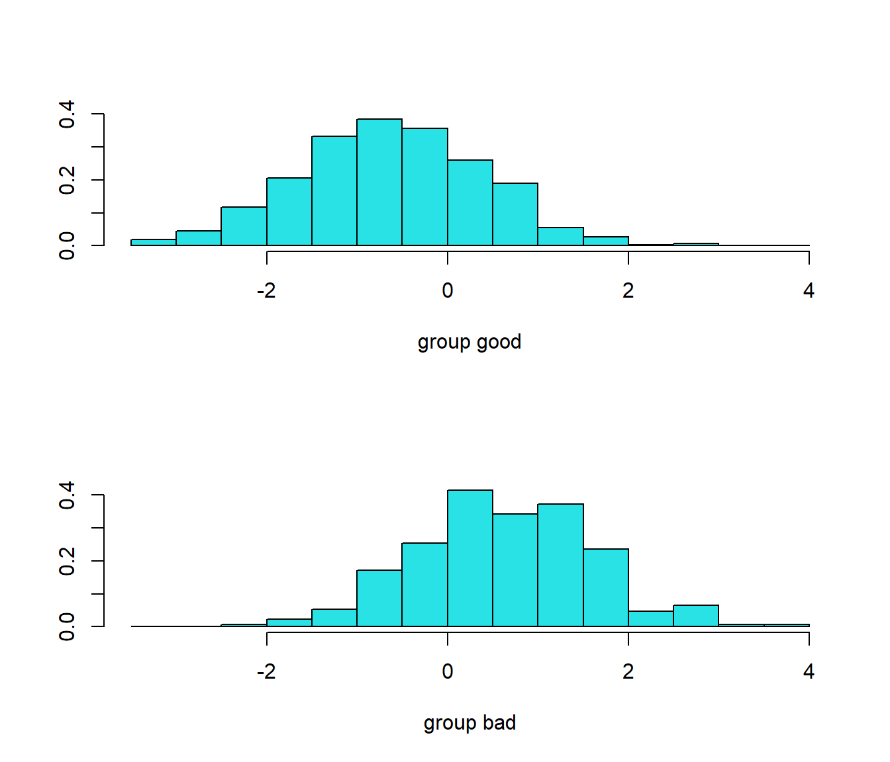

5.1 Análisis discriminate lineal
El análisis lineal discrimintante (LDA) se inicia en Fisher (1936) pero es Welch (1939) quien lo enfoca utilizando el teorema de Bayes. Asumiendo que \(X | Y = k \sim N(\mu_k, \Sigma)\), es decir, que todas las categorías comparten la misma matriz \(\Sigma\), se obtienen las funciones discriminantes, lineales en \(\mathbf{x}\), \[\mathbf{x}^t \Sigma^{-1} \mu_k - \frac{1}{2} \mu_k^t \Sigma^{-1} \mu_k + \mbox{log}(P(Y = k)) \]
La dificultad técnica del método LDA reside en el cálculo de \(\Sigma^{-1}\). Cuando hay más variables predictoras que datos, o cuando las variables predictoras están fuertemente correlacionadas, hay un problema. Una solución pasa por aplicar análisis de componentes principales (PCA) para reducir la dimensión y tener predictores incorrelados antes de utilizar LDA. Aunque la solución anterior se utiliza mucho, hay que tener en cuenta que la reducción de la dimensión se lleva a cabo sin tener en cuenta la información de las categorías, es decir, la estructura de los datos en categorías. Una alternativa consiste en utilizar partial least squares discriminant analysis (PLSDA, Berntsson y Wold, 1986). La idea consiste en realizar una regresión PLS siendo las categorías la respuesta, con el objetivo de reducir la dimensión a la vez que se maximiza la correlación con las respuestas.
Una generalización de LDA es el mixture discriminant analysis (Hastie y Tibshirani, 1996) en el que, siempre con la misma matriz \(\Sigma\), se contempla la posibilidad de que dentro de cada categoría haya múltiples subcategorías que unicamente difieren en la media. Las distribuciones dentro de cada clase se agregan mediante una mixtura de las distribuciones multivariantes.
5.1.1 Ejemplo MASS::lda
load("data/winetaste.RData")
# Partición de los datos
set.seed(1)
df <- winetaste
nobs <- nrow(df)
itrain <- sample(nobs, 0.8 * nobs)
train <- df[itrain, ]
test <- df[-itrain, ]
library(MASS)
ld <- lda(taste ~ ., data = train)
ld## Call:
## lda(taste ~ ., data = train)
##
## Prior probabilities of groups:
## good bad
## 0.662 0.338
##
## Group means:
## fixed.acidity volatile.acidity citric.acid residual.sugar chlorides
## good 6.726888 0.2616994 0.3330211 6.162009 0.04420242
## bad 7.030030 0.3075148 0.3251775 6.709024 0.05075740
## free.sulfur.dioxide total.sulfur.dioxide density pH sulphates
## good 34.75831 132.7568 0.9935342 3.209668 0.4999396
## bad 35.41124 147.4615 0.9950789 3.166331 0.4763905
## alcohol
## good 10.786959
## bad 9.845611
##
## Coefficients of linear discriminants:
## LD1
## fixed.acidity -4.577255e-02
## volatile.acidity 5.698858e+00
## citric.acid -5.894231e-01
## residual.sugar -2.838910e-01
## chlorides -6.083210e+00
## free.sulfur.dioxide 1.039366e-03
## total.sulfur.dioxide -8.952115e-04
## density 5.642314e+02
## pH -2.103922e+00
## sulphates -2.400004e+00
## alcohol -1.996112e-01
ld.pred <- predict(ld, newdata = test)
pred <- ld.pred$class
caret::confusionMatrix(pred, test$taste)## Confusion Matrix and Statistics
##
## Reference
## Prediction good bad
## good 146 49
## bad 20 35
##
## Accuracy : 0.724
## 95% CI : (0.6641, 0.7785)
## No Information Rate : 0.664
## P-Value [Acc > NIR] : 0.0247239
##
## Kappa : 0.3238
##
## Mcnemar's Test P-Value : 0.0007495
##
## Sensitivity : 0.8795
## Specificity : 0.4167
## Pos Pred Value : 0.7487
## Neg Pred Value : 0.6364
## Prevalence : 0.6640
## Detection Rate : 0.5840
## Detection Prevalence : 0.7800
## Balanced Accuracy : 0.6481
##
## 'Positive' Class : good
##